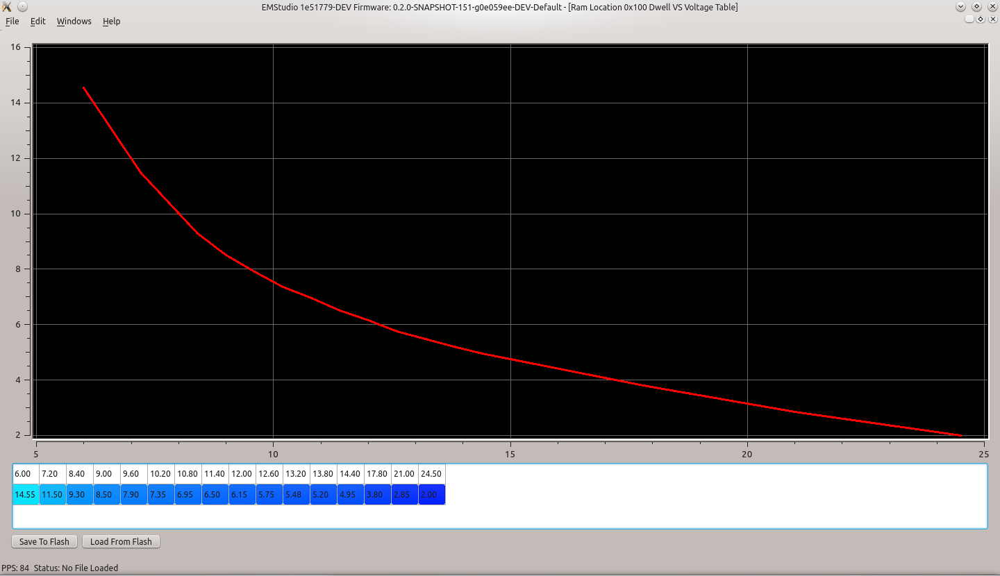
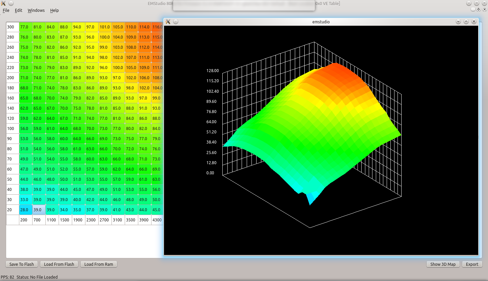
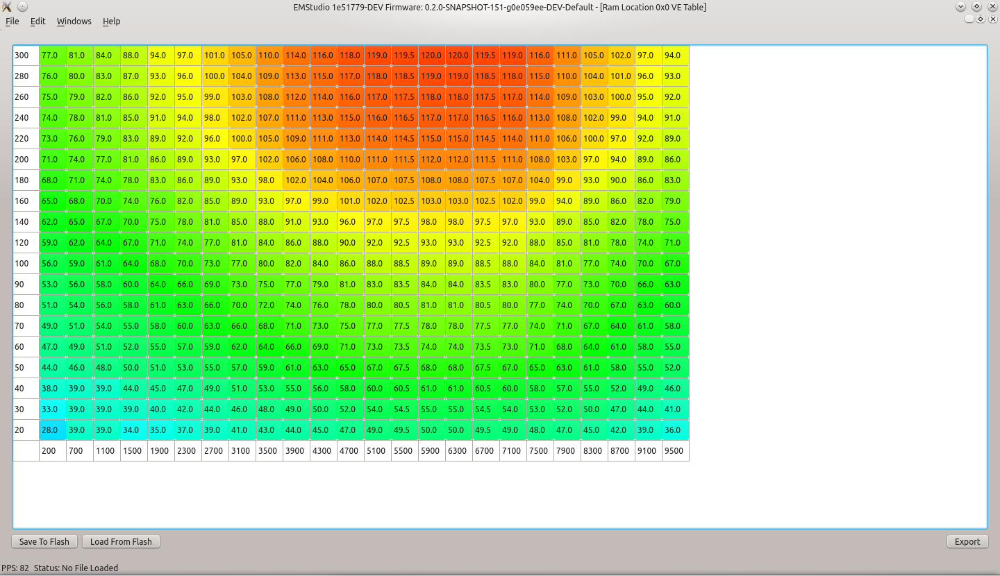
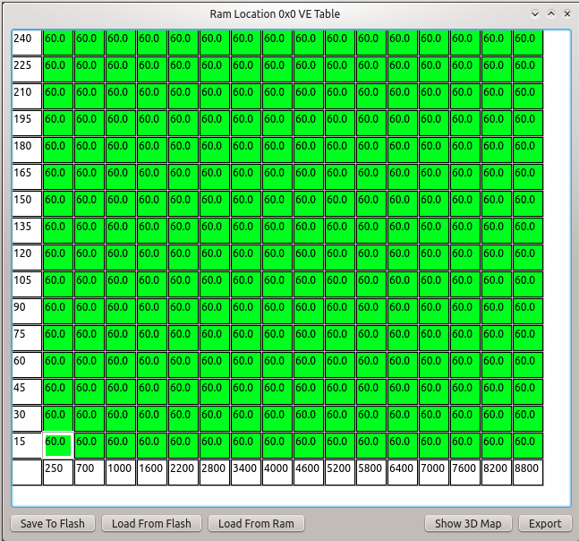
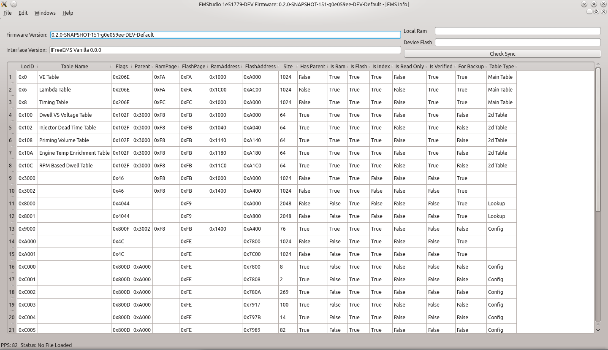
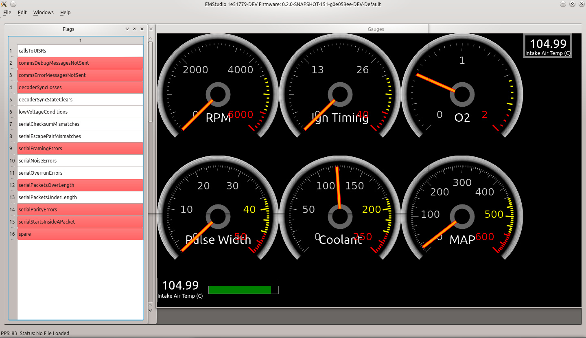
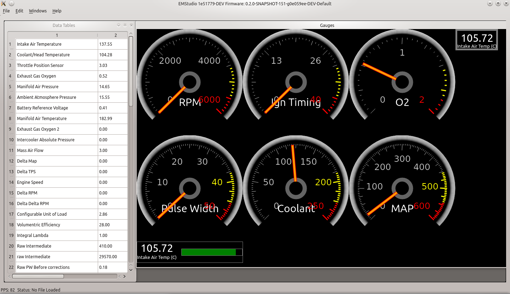
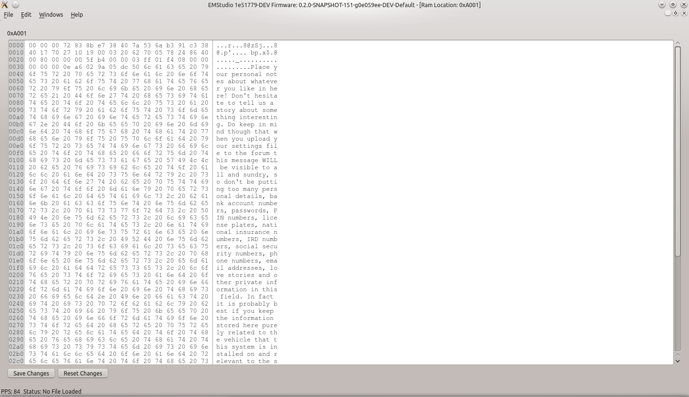
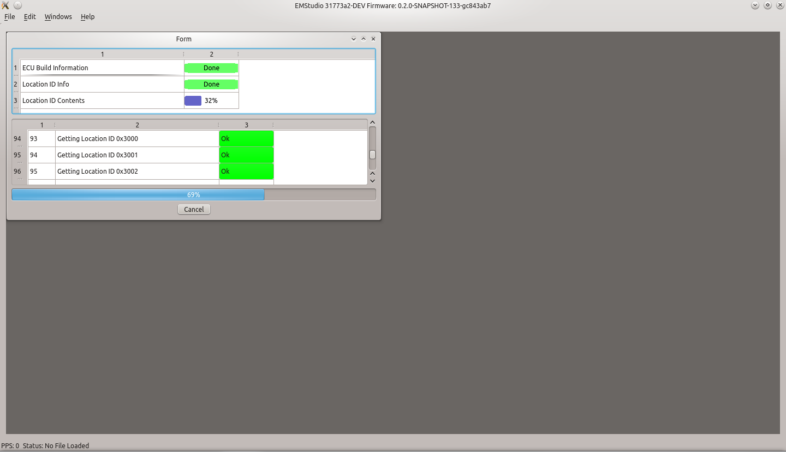

How do I get it?
The easiest way to get EMStudio is to download it from the continuous build server. There are several versions available on the server: http://mikesshop.net/EMStudio/
* Master (semi-stable) Builds: These builds should be used if you want a stable, working, tested release.* Dev (Totally unstable) builds: These builds should be used if you would like to help in testing, or want bleeding edge features
Build from source
To build from source, please refer to the build instructions contained in the readme file: https://github.com/malcom2073/emstudio/blob/dev/README.md
What can it do?
EMStudio is a work in progress. As such, its feature list is slightly limited as of now. Currently, it can:
* Probe a device and display all relevant meta-data
* Display live data from a FreeEMS ECU
* Runtime scriptable gauges for any datalog value
* Live data display as name-value tables
* Live data following on 2D and 3D tables
* Load, edit, and write 3D tables (Tabular and Contour views)
* Load, edit, and write 2D tables (Tabular and Graph view)
* Load, edit, and write memory locations as raw hex
* Load, edit, and save all ECU data offline (Not connected to an ECU)
* Show ECU status and warning flags
* Offline mode allowing for seamless transitions from the car to the bench
* Generally Look Awesome
What does it look like?
        {kind=link}
{kind=link}
{kind=link}
{kind=link}
{kind=link}
{kind=link}
{kind=link}
{kind=link}
{kind=link}
FreeEMS?
Authors and Contributors
Michael Carpenter, the author of EMStudio
Fred Cooke, the mastermind behind FreeEMS
Support or Contact
The best way to contact me is on irc.
Server: irc.freenode.net Channel: #freeems-dev